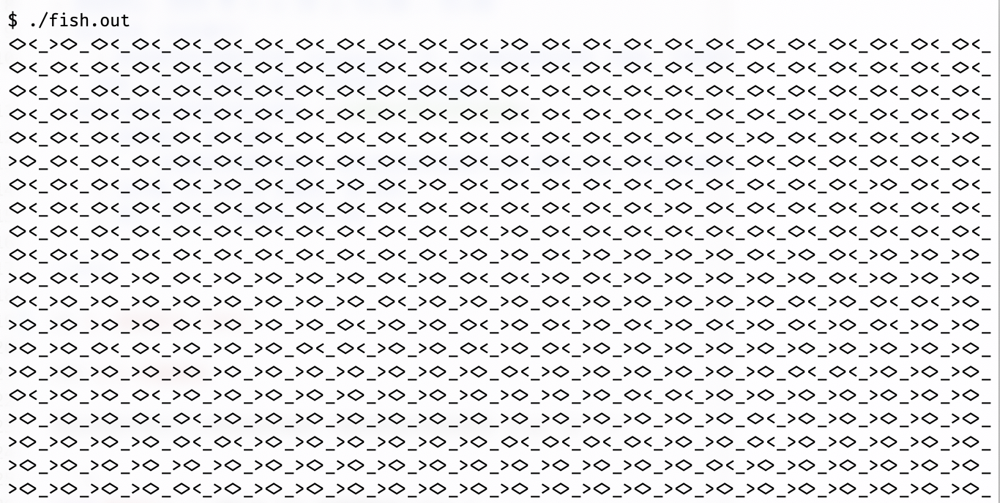

五一调休部分课程安排：
请填写问卷。如问卷未填写完毕就手滑提交，可以再次作答提交 (不用重复填写之前填过的部分)。请把问卷作为闭卷考试，独立完成。
假设系统中有以下三种类型的线程 (每种类型的线程都有 个)：
void type1() { while (1) putchar('<'); } void type2() { while (1) putchar('>'); } void type3() { while (1) putchar('_'); }
如果它们并发/并行执行，我们会看到屏幕上打印交替出现的例如 <><<___<>... 这样的字符串。现在，你需要同步这些线程，使得我们的线程不再是随意地打印字符，而是能够不断打印 “鱼” 的形状。一个合法的 “鱼” 形状是以下两种字符串之一：
<><_ (向左看的鱼，以下划线结尾)><>_ (向右看的鱼，以下划线结尾)也就是你同步后的线程输出的字符串应该总是在屏幕上看到打印出的 “<><_” 或 “><>_”，如下图所示：

我们已经给出了一份框架代码 (在 2.2 节部分有下载链接)。你需要在框架代码的 TODO 处填入代码：
void fish_init() { /* TODO */ } void fish_before(char ch) { /* TODO */ } void fish_after (char ch) { /* TODO */ } static const char roles[] = "<<<<<>>>>___"; // 程序运行后会调用 fish_init() 一次 // 然后创建若干个线程执行 fish_thread() void fish_thread(int id) { char role = roles[id]; while (1) { fish_before(role); putchar(role); // should not hold *any* mutex lock now fish_after(role); } }
你填入的代码会在 putchar(role) 之前和之后执行。在你的代码执行后，我们要求：
putchar(role) 执行时，线程不得持有任何互斥锁；rand 可以返回真随机数)。while (1) { printf("%s" ? rand() % 2 == 0 ? "<><_" : "><>_"); } // example: <><_<><_><>_><>_<><_><>_<><_><>_<><_>...
你可以定义互斥锁、条件变量或信号量，或一些静态数据/局部变量 (在 fish_init 中初始化)，例如以下代码都是合法的：
pthread_mutex_t lk = PTHREAD_MUTEX_INITIALIZER; pthread_cond_t cond = PTHREAD_COND_INITIALIZER; sem_t sem;
在你提交的 fish_before, fish_after 函数中，你只允许执行纯粹的计算 (局部/全局状态的修改)，以及调用我们允许的互斥/同步函数：
pthread_mutex_lock, pthread_mutex_unlockpthread_cond_wait, pthread_cond_signal, pthread_cond_broadcastsem_init, sem_wait, sem_post除此之外，不能调用其他库函数、执行系统调用等。数据竞争是 undefined behavior。当然了，我们鼓励你在编程的过程中使用 printf, assert 等帮助你调试。请在提交时删除多余的打印 (或使用编译选项避免输出)；程序应满足的断言 assert 可以保留。
点此下载期中测验代码包。同操作系统课程实验一样，在 Linux 环境下请使用 make 命令编译你的代码，它会记录你编程的过程。不完整的 Git 记录将被 Online Judge 拒绝。提交时，设置好 STUID (学号) 和 STUNAME (中文姓名) 环境变量，然后在终端中执行 make submit 提交。Online Judge 不会返回你程序的评测结果，但会检查 Git 记录，在下面你可以看到你的提交记录。
os-midterm” 的目录名。否则 Online Judge 将会找不到 Git 记录而拒收你的提交。对于任意只包含 <>_ 三种字符的字符串 roles 且每个字符至少出现一次，你的程序应该能在屏幕上不断以不太慢的速度显示出两种方向的 “鱼”，就可以认为正确。我们给出了一个测试用例 (roles[] = "<<<<<>>>>___", 共 12 个线程供你测试)。
此外，你的程序可能会存在一定的不公平性/随机性，例如某种字符串出现的概率会稍大一些，这些都是允许的。但如果输出不合法、只看到一种方向的鱼或是程序异常终止，你的程序都将被认为是错误的。